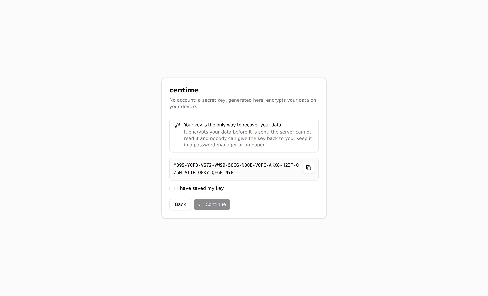
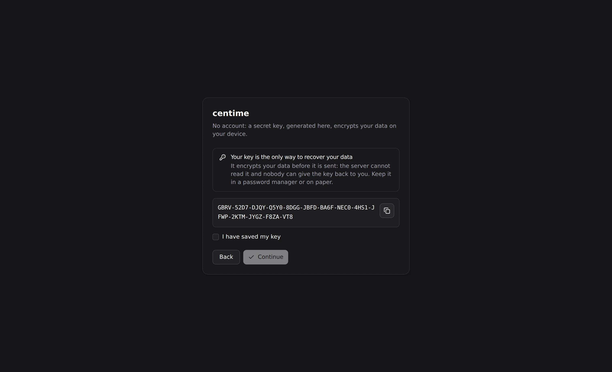

Getting started
Centime runs as a web app served by its own small server, or as a desktop app. Both use the same interface and the same encrypted format.
Choose how to run it
- Docker — the quickest path for hosting it yourself: see Self-hosting.
- From source — for development: see below.
- Desktop — offline-capable Tauri app: see Desktop app.
Run from source
You need Bun 1.3.6 or newer.
git clone https://github.com/adrien-cardinale/centime.git
cd centime
bun install
cp .env.example .env
bun run dev- API:
http://localhost:3000 - UI:
http://localhost:5173(proxies/apito the API)
The relay database is created on first start, by default in data/relay.db.
First launch


- The app asks for a key. Choose create a new one and store the displayed recovery key somewhere safe, or enter an existing one to join your data from another device.
- Create an account for your bank, then import a statement.
- Set up categories, rules and budgets.
On Android, the first screen also offers Scan a QR code: an already configured device hands over the key and the server address, so there is nothing to type. See Encryption and sync.
Keep your recovery key. Anyone holding it can read your data, and losing it makes the data unrecoverable. The server cannot help you.